This brief and somewhat cheesy "welcome" message was created using some of the tools described on this page: Mediasound (recording & editing), Mix (gratuitous real-time effects and mixdown), MiXViews (DC offset removal), and MovieMaster (MPEG encoding). Got a cool sound-clip or composition which was created using any of the apps on this page? Let me know; I'd like to start a "gallery" of them...
Here is a brief list of the announced audio applications of which I am aware. By audio applications, I mean an application which has the synthesis, analysis, or editing of audio as one of its primary functions; the application need not be strictly for audio. Please note that inclusion in this list does not constitute any sort of endorsement or guarantee on my part or the part of Silicon Graphics, Inc.
I have tried to be unbiased and simply describe what I believe each application does. In the cases where an application is described in SGI's Third Party Applications Directory, I have usurped the description from there, removing bias if necessary. (See the Applications Directory if you want the original text, or follow the links on the applications themselves. For more whizzy PR-stuff, you can check out the Silicon Studio home page).
Soon to Come! Watch this space for new applications, an application index, more and better screen snapshots, and example audio clips from some of the applications.
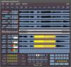
Commercial Applications
TimeLine Vista Inc.
 Mediasound
Mediasound
Mediasound offers multitrack digital audio recording/editing and features a very fast user interface and integration with multimedia production and post-production tools. Current version supports multiple windows of 8 tracks with gain & pan, 4-channel input, and multiple open sessions with full cut & paste between them. Syncs to video using TimeLine's MicroLynx product.
Kris Jackson
timeline@cerf.net
TimeLine Vista, Inc.
2401 Dogwood Way
Vista CA 92083
(619) 727-3300 voice
(619) 727-3620 fax
Sonic System
The Sonic System(tm) is a family of digital audio workstations designed for use in the CD PreMastering, Audio/Video Post Production, Music production, and Radio Broadcast markets. The system is configurable from 2 channels of digital audio I/O up to 24 channels and features extensive audio editing and digital signal processing power. The system supports recording resolutions up to 24-bit, and as many as 72 independent tracks of audio playback are available. The Sonic System(tm) includes software as well as audio processing hardware.Available Soon.
Mark Ely, Product Manager
Sonic Solutions, Inc.
1891 E. Francisco Blvd.
San Rafael, CA 94901
(415) 485-4800
(415) 485-4877
mark-ely@sonic.com
Audio Works 2
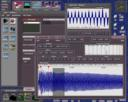
Audio content creation and real-time audio rendering for 3D simulations and games. Provides sound design and audio scene database creation. "AudioWorks is an interactive, real-time, 3D, multi-sound capability adds a whole new dimension to simulation and virtual reality applications. AudioWorks provides continuous, real-time 3D processing of multiple independent moving sounds with SGI computers."
John Perser
jperser@paradigmsim.com
Paradigm Simulation Inc.
15280 Addison Rd.
Dallas, TX 75248
214-960-2301
MpegExpert
MPEG playback solution for SGI platforms. It plays compressed MPEG-1 audio, video or system-level multiplexed audio+video bitstreams in real-time with stereo CD quality sound.With the integrated CAPTURE_TOOL, it lets the user cut and save pictures or sequences from an MPEG source. And with the CD_TOOL, users can play Video_CD and CD-I digital movies from a CD-ROM player.
Download a Demo VersionKilicaslan Mertan, Product Manager
apvision@netcom.com
Applied Vision
2719 S. Norfolk Street #209
San Mateo, CA 94403 USA
415-573-8365 voice
415-573-7913 fax
North Valley Research Digital Media Development Kit
Version 2.0
Audio/video MPEG encoding/decoding, audio/image conversion software. Requires IRIX 5.2. Any SGI platform will support encoding/playback; audio playback requires AL-compatible audio-equipped system. 100MHz or faster processor recommended for playback.
Download a Demo Version
Download Specs and Price List
MAX
Max is a graphical programming environment for developing audio applications.
SVP
SVP, a super phase vocoder, is a modular software for sound analysis, processing and synthesis based on Inverse Fourier Transforms and linear prediction coding. It allows filtering by frequency bands and surfaces, time stretching and compression, mixing and cross-synthesis special effects (such as tremolos, speaking instruments, etc.) Mainly used in studio production, it works on Macintosh and UNIX workstations (DEC, SGI).
UDI
UDI is a signal processing library of C routines which provides a coherent software approach for developing and maintaining digital signal processing algorithms on stand-alone Workstations or on host/array processor configurations. Initially designed for sound signal analysis and synthesis, it can be used by any application which does vector math calculations. It provides functions ranging from elementary vector and matrix operations to more specific DSP operations, such as, but not limited to, FFT, least square, linear prediction coding, discrete spectrum and pitch detection.
Vincent Puig, Marketing Director
IRCAM
1 Place Stravinsky
Paris, 75004
France
011-33-1-44-78-67-60
011-33-1-42-77-29-67
FLAME
Non linear post-production professional software for video and film special effects. Offers real-time video and audio playback, editing, keying, compositing, color correction, audio, text, paint, 3D effects, warping, motion tracking, plug-ins and real-time video input/output. Runs on the SGI Onyx RE2 w/ Sirius & Vigra boards.
FLINT
Post-production professional software for video and film special effects. Offers video and audio playback, editing, keying, compositing, color correction, audio, text, paint, 3D effects, and motion tracking. Runs on the SGI Indigo2.
Peter Maag
DISCREET LOGIC Inc.
5505, boul. St-Laurent
Suite 5200
Montreal (Quebec), H2T 1S6
CANADA
Tel: (514) 272-0525
Fax: (514) 272-2671
Peter_Maag@discreet.qc.ca
Aware AudioSuite
MPEG and Multi-rate (lossless, high-resolution) audio compression tools.
Speed-of-Sound
Sound-Effects Library
Revolucid
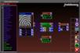
Revolucid is a multimedia tool which lets you directly convert images, movies, shapes and sounds into beautifully complex and unique MIDI sequences. Music can also be generated from fractals, mathematical functions, and from 3D objects.
Dave Scruton, President
Fractallonomy
512 Avenue G #308
Redondo Beach, CA 90277
USA
310-540-5702
scruton@delphi.com
ERS-2000
The Entropic Recording Spectrograph (ERS-2000) is a two-channel, real-time spectrum analyzer that simultaneously digitizes and records signals while using X-Windows to display frequency and time domain data in real time.
waves+
waves+ is an interactive program for viewing, manipulating, visualizing, and analyzing signals. It exploits X-windows for time synchronous viewing, panning, zooming, editing, and playback of multiple signals.
ESPS
The Entropic Signal Processing System (ESPS) provides a signal processing extension of UNIX.
ETSM
Entropic Time-Scale Modification software (ETSM) provides an efficient, effective and robust means for audio time-scale modification (the playback of audio data at rates faster or slower than the original recording, but without changes to the local periodicity).
HTK
The Hidden Markov Model Toolkit (HTK) is a software toolkit for building Hidden Markov Model (HMM) speech recognition and classification systems.
Aligner
The Aligner is a system that automatically time aligns speech signals and the corresponding English text. The Aligner also generates a phonetic transcription and time-aligns it to the speech waveform.
Ken Nelson, Director, Marketing and Sales
Entropic Research Laboratory
600 Pennsylvania Ave S.E.
Suite 202,
Washington, D.C. 20003
(202) 547-1420
info@wrl.epi.com
Sound Quality
Mechanical engineering design tool for analyzing and engineering the sound quality of systems (e.g. automobiles). Integrates with SDRC's well-known IDEAS software.
Alun Crewe
SDRC
2000 Eastman Drive
Milford OH 45150-2789
(513) 576-2400
SuperJAM!
SuperJAM! is an automated composition program designed for the tone-deaf and talented alike. Used for creating copyright-free multimedia soundtracks, writing original compositions, and having fun with music, SuperJAM! comes with over 25 different musical styles such as classical, jazz, reggae, and rock 'n roll. SuperJAM! works with either MIDI or as a standalone application, using the IRIS Indigo's(tm) audio architecture to create 16-bit instruments. In addition, users can create their own styles from scratch or modify existing styles to suit their musical tastes.
Brian Thomas, Sales & Information
Blue Ribbon Soundworks
1605 Chantilly Drive
Suite 200
Atlanta GA 30324
(404) 315-0212
(404) 315-0213
Elastic Reality
ElasticReality(tm) 1.3 is a versatile warping and morphing system that can also be used for matte creation and general-purpose compositing. Its built-in audio support allows frame-accurate lip sync animation and a render server is available. Status: Available now.
JoLaine Benson, Account Representative
Elastic Reality (ASDG, Inc).
925 Stewart Street
Madison, WI 53713
USA
608-273-6585
608-271-1988
asdg2@bix.com
Digital Studio
Media Suite Pro
Media Suite Pro is a video and audio editing system.
Scott Bennett, Product Manager
Avid Technology, Inc.
Metropolitan Technology Park
1 Park West
Tewksbury, MA USA 01876
508-640-3018
fax:508-640-0063
SLICE
Video and Audio Editing System
Jaleo
Video and Audio Editing System
Audio Architect
Audio Architect(tm) is an advanced toolkit that provides high-level audio processing to any new or existing application. Both data sonification and spatialization capabilities are available to the developer.
Personal Audio
Personal Audio is a data sonification product providing the user with the capability of easily adding sonic values to data streams.
KIM
The Kittyhawk Interface to MIDI, KIM, is a high-speed VME interface for MIDI devices.
Cynthia Traegar, President & CEO
Visual Synthesis, Inc.
4126 Addison Road
Fairfax, VA 22030
USA
703-352-0258
703-352-2726
BeSTspeech T-T-S
BeSTspeech(R) T-T-S is text to speech conversion software. It creates computer-synthesized speech output in a wide variety of different languages. It is now available in English, French, German, Italian, Spanish and Japanese, with more to come.
Elisabeth W. Peters, General Manager
Berkeley Speech Technologies, Inc.
2246 Sixth Street
Berkeley, CA 94710
510-841-5083
510-841-5093
bst@well.com
VigraSound
VigraSound is a 6U VME audio board designed specifically for Silicon Graphics Onyx and Challenge workstations. VigraSound is compatible with SGI's Audio Library and supports the current SGI IRIX operating system version 5.2.
Julie Wix, Sales/Marketing
Vigra - a division of VisiCom Laboratories
6044A Cornerstone Court
San Diego, CA 92121 USA
619-597-7080
fax:619-597-7094
julie@vigra.com
InPerson
Media-based collaboration software, incorporating teleconferencing, shared whiteboards, and shared applications.
The following applications come with each audio-capable SGI system, unless otherwise
noted.
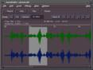 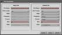 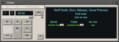 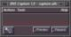 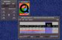 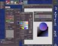 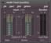 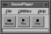
Bundled Applications
Soundeditor
Simple sound recording & editing program. Supports mono, stereo, and 4-channel
sound files of 8,16, or 24-bit audio. Provides simple effects (reverse, echo,
fades, normalization, time-stretching) and cut-and-paste editing functionality.
Sound can be cut-and-pasted between multiple simultaneous instances of
soundeditor.
Soundfiler
Sound file format & sample-rate conversion program. Supports AIFF, AIFF-C,
NeXT/Sun, raw, and WAV formats. Converts number of channels, data type as
well.
DATman
CDman
DATman: Virtual deck for DAT playback & recording on the SCSI DAT drives,
to/from the built-in audio system and optionally to/from disk.
CDman: Virtual deck for CD playback on the SCSI CDROM drives,
to the built-in audio system and optionally to disk. Supports a database
of CD titles.
sfplay
playaiff
playaifc
Soundfile playback -- sfplay supports .aiff, .aifc, .wav, .au, .snd, and raw
data files. playaiff supports AIFF; playaifc supports AIFF-C & AIFF.
recordaiff
recordaifc
Soundfile recording in AIFF or AIFF-C formats.
capture
Easy-to-use audio, image, and movie capture tool.
movieplayer
moviemaker
makemovie
Movie construction, editing, and playback tools. Support a number of
formats, including QuickTime.
Showcase
Graphics and media presentation package.
Apanel
Audio control panel. Provides input source selection, level meters and faders,
speaker gain controls, sample rate selection, input monitoring, and output
mute controls.
MovieMaster, dmconvert
Create MPEG-1 audio, video, or systems bitstreams
convert from MPEG-1 files to uncompressed formats
combine MPEG-1 audio,video streams into systems streams
extract MPEG-1 audio,video streams from systems streams
Available starting with WebFORCE 1.0. Note: encode
features require a license .
Soundplayer
Play Wave, Sun/NeXT, MPEG-1 bitstreams, AIFF-C, AIFF, with a graphical UI. Available starting with WebFORCE 1.0 .
The following applications are available free-of-charge from the sites noted.
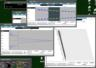
Public Domain or Publicly Available Applications
MIT Media Lab Machine Listening Group
CSound
Software audio synthesis/analysis language.
Author: Barry Vercoe and others. There's more information available on Csound from the
Leeds Csound Front Page.
Grab the source
Grab SGI binaries
CMix
Software analysis/synthesis package.
Author:
Paul Lansky.
Grab the Source (via The Princeton Sound Kitchen Page)
Nyquist
A LISP-based language for composition and sound synthesis.
Author: Roger B. Dannenberg
Grab a copy
CLM (Common Lisp Music)
CLM is a sound synthesis and processing system in the Music V
family.
Author: Bill Schottstaedt (bil@ccrma.stanford.edu) .
Grab a copy
MODE (Musical Object Development Environment)
The MODE is an object-oriented music composition system written in Smalltalk.
Author: Steven Travis Pope (stp@cnmat.berkeley.edu) .
Grab a copy
Common Music (CM)
Common Music (CM) is a music composition environment that supports
both algorithmic and non-algorithmic styles of music composition. It
produces musical output for a number of widely available synthesis
programs and protocols such as MIDI, CSound, Common Lisp Music (CLM),
Music Kit, CMix, CMusic, RT, Mix and Common Music Notation (CMN).
CM requires Common Lisp .
Author: Rick Taube (hkt@guido.zkm.de) .
Grab a copy (CCRMA)
Grab a copy (Germany)
MiXViews
Sound editing and signal-processing, including numerous types of filtering,
LPC and formant analysis.
Author: Doug Scott .
Check out the MiXViews page
Ctrack
Multi-track recording & mixing with automation.
Author: Chris Plack
Grab a copy
Multitrack
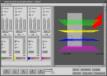
Multi-track recording & mixing, including 3D audio displays.
Author: Terry Weissman
Grab a copy
Ceres
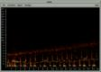
Ceres is a program for displaying sonograms and for sound effects in the frequency domain. It is best described as a graphical user interface to the phase vocoder. Does time stretch, pitch shift, filtering, granular effects etc. Or sends the analysis to a text file or to a CSound score file.
Mix
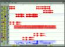
Mixdown program. Import your mono or stereo soundfiles, move them around on 9 tracks, add envelopes, panning curves, and effects send curves. Mix to soundfile or in real time (you may use the sliders etc. while it plays). Has a number of real-time effects and rudimentary timecode support (via MIDI).
Sono
Takes a soundfile of any length (an electroacoustic piece or whatever) and writes a multi-page Postscript file which you can send directly to your laser, containing a sonogram and an oscillogram. Tries to look like a "real" musical score.
Author: Øyvind Hammer .
Grab any of the NoTAM software
Cspect
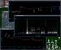
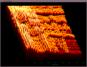
Real-time spectra, spectrograms, oscilloscope, and waterfall plots.
Author: Chris Plack
Grab a copy
rtspect
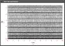
Real time spectrogram - wide band spectrogram for SGI's.
Author: David Rossiter (dpr@ohm.york.ac.uk) .
Grab a copy
Pitchchange
Simple program that shifts pitch of SGI audio signal in real-time.
Erase
This is a very simple vocal eraser. It (sorta) works by adding one channel out of phase to the other. Anything present in both channels in the same amount disappears, and everything else changes volume pretty wildly.
Author: Ross Clement .
Grab Pitchchange or Erase
spectra
Spectra is a stand-alone program which is designed to replace the traditional Audio Control Panel supplied by the Silicon Graphics with a much smaller, and sleeker, display. This display may be kept always active on your display due to the minimal screen area it occupies. (22 pixels width!!)
Author: David Cook (dcook@npal.rn.com).
Grab a copy
VSS (Virtual Sonic Space)
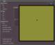
Real-time 3D spatialization program, with HRTF convolution, doppler shift, distance cues
Author: Rick Bidlack (rb@accessone.com) .
Grab a copy
Rosegarden
Notation and sequencing suite of tools. Files can be exchanged between notation and sequencing tools. Can import/export MIDI files, create CSound scores, too. "Some features not completed, but development continues."
Authors:
- Chris Cannam
- Andy Green
- John Fitch
Grab a copy
CMN (Common Music Notation)
Music Notation package; requires Common Lisp, CLOS, PostScript w/ Sonata or Petrucci fonts.
Author: Bill Schottstaedt (bil@ccrma.stanford.edu) .
Grab a copy
MusicTeX
TeX support for music notation. Requires TeX.
Author: Daniel Taupin
Grab a copy (Denmark)
Grab a copy (Stanford)
SOX
Audio file format conversion tool; has other features, including resampling, filtering, gain, and effects.
Author: Lance Norskog (thinman@netcom.com)
Grab a copy (Netherlands)
Grab a copy (CMU)
maplay
A software-only MPEG audio player.
Author: Tobias Doping Bading (bading@cs.tu-berlin.de)
Due to slow Internet connections to this site, please use the mail server mail-server@cs.tu-berlin.de . Send an email to this address with the contents SEND incoming/maplay1.2/maplay1_2.tar.Z
Shorten
Audio Compression tool.
Author: Tony Robinson.
Grab a copy
Midia
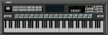
Midia is a software-only midi file player.
Author: Mike Friedman.
Grab a copy (UMBC)
Grab a copy (NL)
Grab a copy (DE)
Tracker
Software-only MOD file player. Under IRIX 5.3, the desktop has support for playing MOD files by double-clicking on them if you have tracker installed.
Author: Marc Espie
Grab a copy
MIDI routines
Simple routines for MIDI I/O and examples of use.
Author: Tom Benoist (benoist@netcom.com) .
Grab a copy
rsynth
Complete speech synthesis system for UNIX.
Author: Nick Ing-Simmons.
Grab a copy
scat
an SGI port of 'scat' a voice synthesizer.
Author: ported by Tom Benoist (benoist@netcom.com) .
Grab a copy
Netaudio
Client/server application built on the same model as X windows, mechanism for distributed audio on a network.
Author: ???.
Grab a copy
NeVoT
Audio conferencing program.
Author: Henning Schulzrinne (schulzrinne@fokus.gmd.de).
Grab a copy (UMass)
Grab a copy (Germany)
VAT (Visual Audio Tool)
Multicast/Unicast audio conferencing system.
Authors:
- van@ee.lbl.gov
- mccanne@ee.lbl.gov.
Grab a copy
DAT Goodies
Source-code examples for automated audio DAT recording/playing on SGI, using the built-in DAT drives; includes dodat , a DAT scripting language with support for DAT mastering and gathering files from DAT, and cdtodat , which transfers CD's to DAT.
Author: Doug Cook (cook@sgi.com)
Grab a copy
{kind=link}
{kind=link}
{kind=link}
{kind=link}
{kind=link}
{kind=link}
{kind=link}
{kind=link}
{kind=link}
{kind=link}